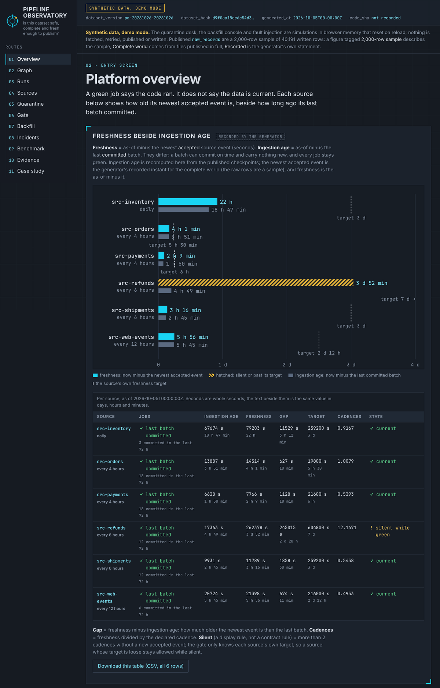
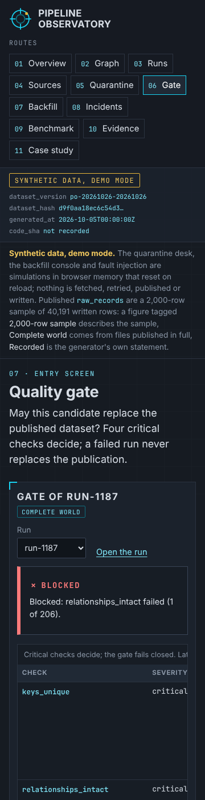

[ Work ]Dashboard · Data engineering · Reliability · FastAPI · ReactCase 231 / 236
Is This Dataset Safe, Complete and Fresh Enough to Publish?
Pipeline Observatory: a data-platform reliability laboratory where the delivery guarantee is proven at a boundary instead of claimed. Ingestion is at-least-once with idempotent apply on the source key, a batch commits with its checkpoint in one transaction, duplicates and quarantined rows are counted rather than dropped, freshness is measured on the data and not on the colour of the job, a critical check blocks publication and leaves the pointer where it was, late events behind the watermark land in the next publication, and every publication reconciles to a stated residual. The known answer: ten rows arrive, eight are accepted, one is a duplicate and one is quarantined; replaying the batch leaves eight, and a crash after the data write but before the checkpoint never makes a ninth. Synthetic data; project 08 of the Business Data Lab.
What needed answering
The pipeline dashboard is green and the numbers are wrong. A source stopped delivering three days ago while its jobs kept succeeding; a batch that crashed after writing its rows was replayed and some keys were counted twice; a row with a negative quantity vanished instead of being quarantined; a run that failed its relationship check still replaced the published table; events that arrived after the watermark were lost; and the published total differs from the source total by an amount nobody can explain.
Pipeline Observatory measures the platform instead of trusting it: freshness on the data beside the age of the last successful ingestion, a batch and its checkpoint committed together so a replay is idempotent on the source key, every received row in exactly one class, a quality gate that fails closed and never moves the publication pointer for a blocked run, a disclosed watermark with late events counted and included next time, and a reconciliation whose residual is a number with its parts.
The build
Two implementations of one contract, checked against a hand calculation and each other.
- The contract: pages fetched from a cursor with a rate-limit hint honoured on retry and a repeating cursor stopped as a loop; every raw row carrying its payload hash and source key; a record whose key was already accepted being a duplicate, a record failing the contract being quarantined with a reason, and nothing silently dropped; a batch committing atomically with its checkpoint at version plus one, so a replay from the last committed cursor is idempotent and the guarantee is at-least-once with idempotent apply, proven at the key boundary and never called exactly-once; a schema version that adds a required field quarantining the batch whole until the expected version is bumped on purpose; freshness as cutoff minus the latest accepted event beside ingestion age as cutoff minus the last committed batch; completeness against a declared expectation per partition; a gate whose critical checks (keys unique, relationships intact, residual zero, freshness within target, every committed batch of the scope included, every late event included) block publication, open an incident and leave the pointer unmoved, and a watermark that can never move backwards; a watermark disclosed with each publication and late events behind it included in the next; a residual that is source total minus published total minus the signed exclusions; tasks counted apart from attempts; recovery measured from detection to a verified recovery that passed the gate and reconciled; and half-open backfills that refuse to overlap.
- A known-answer fixture written first: a batch of ten rows gives 8 accepted, 1 duplicate and 1 quarantined (rejection and duplicate rates 0.100000 each); the replay adds nothing and the crash before the checkpoint leaves eight and version 2; freshness 52,200 seconds against an ingestion age of 42,900; completeness 8 of 9; a run of four tasks with one retried attempt (task success 1.000000, attempt success 0.800000); a gate that allows one run, blocks the next on a critical failure with the pointer unmoved, and allows a third that moves it; a late event behind the watermark included in the next publication with none lost; a residual of 0.00 with exclusions of −30.00 and 29.97; a verified recovery of 475.0000 minutes; backfill coverage 2 of 3; plus a rejected variant (a checkpoint going backwards, a repeated attempt, an overlapping backfill, with a touching range accepted) and an empty variant. A standard-library script reproduces all 742 checks from the records, including a pinned future-dated row that is quarantined rather than counted as fresh.
- The Python domain, PostgreSQL schema and FastAPI commands: fetch a page, validate a batch, commit it with its checkpoint, transform the models, run the gate, publish, inject a fault in the sandbox, request a backfill, recover an incident and archive the evidence; 568 tests on a GitHub-hosted runner (529 of the application and 39 of the analyst artifact package) against PostgreSQL 16 including the crash before the checkpoint proven three ways (a hook that raises after the staging write, a killed backend, an armed fault), concurrent replays that accept each key once, and an independent SQL recomputation that agrees with the domain on the fixtures and the snapshot.
- The static site: the same contract in TypeScript with rational arithmetic only, a platform overview, the dependency graph with freshness drawn on its nodes independent of job colour, run evidence with tasks, attempts and logs, source contracts, the quarantine desk, the quality gate, the backfill console, the incident timeline, benchmark evidence and the case study; 1,180 golden and snapshot checks against the Python domain (eleven block digests, 52 designed-relationship figures, 41 injection checks, every payload and definition hash), 255 review-finding checks over 51 hand-worked worlds, and 90 Playwright tests at four widths and 200% zoom.
- A deterministic synthetic world: eight weeks of hourly runs over six sources (1,343 runs, 1,311 batches, 40,191 raw rows summarised per batch and published as a 2,000-row sample, 12 models over three layers, 25 incidents all closed by a verified recovery, 15 backfills of which two are refused for overlapping) and twelve injected defects (a crash before the checkpoint, overlapping backfills, a retry ignoring retry-after, an unexpected required field, a keyless row that would vanish, a green job on a stale source, a failed run that would replace a publication, an unpropagated delete, a late event behind the watermark, a repeating pagination token, a secret in a structured log, a self-triggering workflow) published with how each must be handled.
Step by step
- Step 01
The known answer before any volume
Ten rows: eight accepted, one duplicate of an accepted key, one quarantined for a negative quantity. Replaying the same ten leaves eight accepted. A crash after the rows are written but before the checkpoint leaves eight and the checkpoint at version 2. The fixture's crashed batch carries only known keys, so by itself it cannot make a ninth; the backend test that proves the guarantee crashes a batch carrying one new key, and the site repeats that experiment in the browser. The source total is 289.94, the published total 289.97, the exclusions −30.00 and 29.97, the residual 0.00. A standard-library script reproduces every figure from the records before the application exists.
- Step 02
Green is not fresh
Freshness is measured on the latest accepted event and ingestion age on the last committed batch. In the synthetic world one source stops delivering for three days while all 72 of its runs succeed; the overview shows the staleness beside the green runs, and the page says why the gate did not catch it: its declared target was seven days.
- Step 03
A blocked run leaves the pointer alone
A critical check that fails blocks publication, opens an incident and leaves the current publication in place. The incident closes only on a verified recovery: a later run that passed its gate and reconciled, measured from detection, never from a restart.
- Step 04
Two modes, disclosed
Mode A is the backend on a GitHub-hosted runner with a transient PostgreSQL. Mode B is the public site over a published snapshot; the quarantine desk, the backfill console and fault injection simulate their actions in browser memory, and nothing is committed or published from them.
Results
The dependency graph on the synthetic snapshot (as of 2026-10-05; freshness is drawn on each node independently of the job mark, so a green job cannot hide a stale source):

The quality gate on a phone:

What the data supports. Over the complete world (the per-batch counts are published in full) the six sources received 39,901 rows in committed batches, of which 37,248 were accepted, 2,101 were duplicates of an already accepted key and 429 were quarantined with a reason (rejection rate 0.010752, duplicate rate 0.052655), plus 123 delete events propagated as exclusions; the 17 rows of the one batch quarantined whole for a schema change are listed separately and are not in those counts. Of 1,343 hourly runs, 1,328 reached the gate, where 1,318 were allowed and 10 were blocked (five on freshness, four on relationships, one on the residual); the other 15 failed in a task before the gate ran. Task success is 0.995311 and attempt success 0.971622 (attempts are not tasks), and the pointer rests on pub-1343. One source, refunds, stopped delivering three days before the as-of while all 72 of its runs stayed green: freshness 262,378 seconds against an ingestion age of 17,363, and completeness 0.000000 on its last three days; its declared seven-day target kept the gate from catching it, and the overview says so. run-1187 failed its relationship check, was blocked, and left the pointer on pub-1186; its incident closed on a verified recovery after 67.8833 minutes. All 25 incidents closed on a verified recovery, mean 60.6827 minutes. The shipments source was rate-limited 49 times and every retry honoured the retry-after hint. The generator records 757 late events behind the watermark, all included in the next publication and none lost, every publication reconciling to 0.00, and one unexplained residual (−141.46 on 2026-09-09) that blocked its run and opened an incident; the published raw rows are a sample, so the site can recompute 141 late events over the sample and cannot recompute the residuals, and it labels those figures as recorded by the generator rather than found. Eleven of the fifteen partitions requested by the thirteen accepted backfills were verified (0.733333); two further requests, overlapping earlier ones, were refused. These are the generator's designed relationships and the one-draw realisation, published in its manifest; the site recomputes what the published files allow and labels the rest; they are not findings about any real platform.
Found by review, then fixed. An independent reviewer, briefed to disprove the page, confirmed eight defects: one future-dated event made freshness negative and kept the gate green; a publication could leave out committed batches, so a late event could be lost while the gate still allowed it; a repeated batch identifier silently sent a source's accepted count to zero; the Python, SQL and TypeScript implementations classified Unicode digits and trailing newlines differently; the SQL reference crashed on an impossible date and rounded sub-microsecond instants differently; a re-fetch of the same cursor was refused as a loop by the application while the synthetic world relied on it, and no loop was detected without a fetch session; this page and the site said 25 runs were blocked when ten were blocked at the gate and fifteen failed before it; and the TypeScript mirror did not reproduce the non-object payload crash it was said to. All of it is fixed on the branch and live: a future-dated row is quarantined and freshness is never negative; the gate has two new critical checks, every committed batch of the scope included and every late event included, and a watermark cannot move backwards; a repeated identifier is refused at import; one ASCII pattern set with full-match semantics is shared by all three implementations and non-integer or oversized JSON numbers are refused; the SQL reference validates dates and truncates fractions like the domain; a fetch session is required, a loop is a repeated cursor within one session, and a scheduled re-poll of a stale source is recorded as a re-fetch; the run funnel is computed by the domain and stated everywhere; the payload guard is in both implementations; every figure carries its scope; a finished backfill no longer blocks a later one; the sandbox is off by default; and the identity on the verified backend is stated as header-asserted. The synthetic world was regenerated under the new gate checks (9,296 quality results instead of 6,640; the two refused backfills now overlap requests that were running at the time) and the reviewer's own probes agree with the fixed code.
Not built yet: the verified database holds the published sample rather than the full raw-record history, the recovery and archive commands have no replay event, and the SQL reference does not model delete events.
Next
- Load the full raw-record history into the verified database instead of the published sample, and exercise the recovery and archive commands in the replay events.
- Add delete events to the SQL reference and a scheduler with real fetching.
- Projects 09 and 10 of the lab follow the same gates.